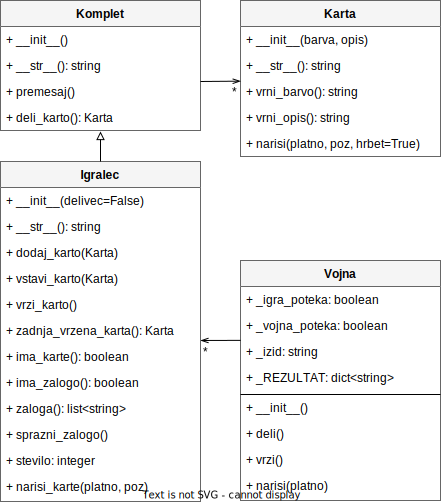

Licenca
To delo je na voljo pod pogoji slovenske licence Creative Commons 2.5:
priznanje avtorstva - nekomercialno - deljenje pod enakimi pogoji.
Celotna licenca je na voljo na spletu na naslovu http://creativecommons.org/licenses/by-nc-sa/2.5/si/. V skladu s to licenco je dovoljeno vsakemu uporabniku delo razmnoževati, distribuirati, javno priobčevati, dajati v najem in tudi predelovati, vendar samo v nekomercialne namene in ob pogoju, da navede avtorja oziroma avtorje in izdajatelja tega dela. Če uporabnik delo predela, kar pomeni, da ga spremeni, preoblikuje, prevede ali uporabi to delo v svojem delu, lahko predelavo dela ponudi na voljo le pod pogoji, ki so enaki pogojem iz te licence oziroma pod enako licenco.

Rešitev
import simplegui
import random
# Definicija konstant
VEL = (86, 120) # Velikost posamezne karte
SRED = (43, 60) # Središče posamezne karte
slike_kart = simplegui.load_image("https://i.imgur.com/02fPJzJ.gif")
# Definicija globalnih spremenljivk za karte
BARVE = ("S", "H", "D", "C") # Spade/Heart/Diamond/Club
ZNAKI = ("♠", "♥", "♦", "♣")
OPISI = ("A", "2", "3", "4", "5", "6", "7",
"8", "9", "X", "J", "Q", "K")
VREDNOSTI = {"A":1, "2":2, "3":3, "4":4, "5":5, "6":6, "7":7,
"8":8, "9":9, "X":10, "J":10, "Q":10, "K":10}
# Definicija razreda 'Karta'
class Karta:
def __init__(self, barva, opis):
""" Inicializator """
if (barva in BARVE) and (opis in OPISI):
self._barva = barva
self._opis = opis
else:
self._barva = None
self._opis = None
print("Neveljavna karta: ", barva, opis)
def __str__(self):
""" Vrne niz, ki predstavlja karto """
znak = BARVE.index(self._barva)
opis = self._opis
if opis == "X":
opis = "10"
return ZNAKI[znak] + opis
def vrni_barvo(self):
""" Vrne barvo karte """
return self._barva
def vrni_opis(self):
""" Vrne opis ali rang karte """
return self._opis
def narisi(self, platno, poz, hrbet=True):
""" Nariše sliko karte na platnu, na danem položaju """
if hrbet:
polozaj = (SRED[0]+VEL[0] * 0,
SRED[1]+VEL[1] * 4)
else:
polozaj = (SRED[0]+VEL[0] * OPISI.index(self._opis),
SRED[1]+VEL[1] * BARVE.index(self._barva))
platno.draw_image(slike_kart, polozaj, VEL,
[poz[0]+SRED[0], poz[1]+SRED[1]], VEL)
# Definicija razreda 'Komplet'
class Komplet:
def __init__(self):
""" Inicializator """
self._karte = []
for barva in BARVE:
for opis in OPISI:
self._karte.append(Karta(barva, opis))
def __str__(self):
""" Vrne niz, ki predstavlja komplet kart """
sporocilo = "Komplet vsebuje"
for karta in self._karte:
sporocilo += " " + str(karta)
return sporocilo
def premesaj(self):
""" Premeša karte v kompletu """
random.shuffle(self._karte)
def deli_karto(self):
""" Deli naslednjo karto iz kompleta """
return self._karte.pop()
# Definicija razreda 'Igralec'
class Igralec(Komplet):
def __init__(self, delivec=False):
""" Inicializator """
self._karte = []
# Karte, ki jih igralec odloži/vrže med igro
self._zaloga = []
def __str__(self):
""" Vrne niz, ki predstavlja igralčeve karte """
sporocilo = "V roki drži"
for karta in self._karte:
sporocilo += " " + str(karta)
return sporocilo
def dodaj_karto(self, karta):
""" Igralcu doda nov objekt 'Karta' na konec """
self._karte.append(karta)
def vstavi_karto(self, karta):
""" Igralcu doda objekt 'Karta' na začetek """
self._karte.insert(0, karta)
def vrzi_karto(self):
""" Igralcu odvzame objekt 'Karta' in ga doda v zalogo """
if self._karte:
karta = self._karte.pop()
self._zaloga.append(karta)
def zadnja_vrzena_karta(self):
""" Vrne zadnjo karto, ki jo je vrgel igralec """
# To pomeni zadnjo karto iz igralčeve zaloge
return self._zaloga[-1]._opis
def ima_karte(self):
""" Vrne, ali ima igralec v roki karte, ali ne """
if self._karte:
return True
else:
return False
def ima_zalogo(self):
""" Vrne, ali ima igralec zalogo kart, ali ne """
if self._zaloga:
return True
else:
return False
def zaloga(self):
""" Vrne igralčevo zalogo kart """
return self._zaloga
def sprazni_zalogo(self):
""" Sprazni igralčevo zalogo kart """
self._zaloga = []
def stevilo(self):
""" Vrne število kart, ki jih ima igralec """
# Pri tem šteje tako karte, ki jih ima igralec v roki,
# kot tiste, ki jih je odložil ...
return len(self._karte) + len(self._zaloga)
def narisi_karte(self, platno, poz):
""" Nariše karte - uporabi metodo narisi razreda 'Karta' """
# Izpis obrnjenih kart, ki jih ima igralec še v roki.
# Vse karte so obrnjene.
ROB = 1
i = 0
for karta in self._karte:
karta.narisi(platno, [poz[0]+i*ROB, poz[1]], True)
i += 1
# Izpis odvrženih kart
ROB = 12
ODMIK = 180
i = 0
for karta in self._zaloga:
# Ali prikaže sprednjo ali zadnjo stran karte
obrni = i % 2
if i == len(self._zaloga)-1:
obrni = False
karta.narisi(platno, [ODMIK+poz[0]+i*ROB, poz[1]], obrni)
i += 1
# Definicija razreda 'Vojna'
class Vojna():
_igra_poteka = False
_vojna_poteka = False
_izid = ""
_REZULTAT = {"SKUPAJ":0, "ZMAGE":0}
def __init__(self):
""" Inicializator """
# Ustvari okvir
self.frame = simplegui.create_frame("Vojna", 650, 600)
self.frame.set_canvas_background("green")
# Ustvari gumbe in jih poveži z dogodkovnimi rokovalniki
self.frame.add_button("Deli", self.deli, 200)
self.frame.add_button("Vrzi", self.vrzi, 200)
self.frame.set_draw_handler(self.narisi)
# Dodaj igralca in delivca
self._igralec = Igralec()
self._delivec = Igralec(True)
# Razdeli karte
self.deli()
# Zaženi animacijo okvirja (dogodkovno zanko)
self.frame.start()
def deli(self):
""" Rokovalnik gumba 'Deli' """
# Ustvari nov komplet kart in ga premešaj
self._komplet = Komplet()
self._komplet.premesaj()
# Dodaj igralca in delivca ter začni igro
self._igralec._karte = []
self._delivec._karte = []
self._igra_poteka = True
self._izid = ""
# Izmenično razdeli 26 kart igralcu in delivcu
for i in range(26):
self._igralec.dodaj_karto(self._komplet.deli_karto())
self._delivec.dodaj_karto(self._komplet.deli_karto())
def vrzi(self):
""" Rokovalnik gumba 'Vrzi' """
if self._igra_poteka:
# Zadnja vržena karta delivca in igralca
if self._delivec.ima_zalogo() and self._igralec.ima_zalogo():
karta_d = self._delivec.zadnja_vrzena_karta()
karta_i = self._igralec.zadnja_vrzena_karta()
# Če je vojna
if karta_d == karta_i:
self._vojna_poteka = True
self._delivec.vrzi_karto()
self._igralec.vrzi_karto()
self._izid = "Vojna!"
# Sicer (če ni vojne)
else:
# Delivec ima višjo karto, kar pomeni,
# da dobi svoje in igralčeve karte
self._vojna_poteka = False
if VREDNOSTI[karta_d] > VREDNOSTI[karta_i]:
for karta in self._igralec.zaloga():
self._delivec.vstavi_karto(karta)
for karta in self._delivec.zaloga():
self._delivec.vstavi_karto(karta)
if not self._igralec.ima_karte():
self._igra_poteka = False
self._izid = "Jack je zmagal! Nova igra?"
self._REZULTAT["SKUPAJ"] += 1
# Igralec dobi vse karte
else:
for karta in self._delivec.zaloga():
self._igralec.vstavi_karto(karta)
for karta in self._igralec.zaloga():
self._igralec.vstavi_karto(karta)
if not self._delivec.ima_karte():
self._igra_poteka = False
self._izid = "Zmagal si! Nova igra?"
self._REZULTAT["SKUPAJ"] += 1
self._REZULTAT["ZMAGE"] += 1
if not self._vojna_poteka:
self._delivec.sprazni_zalogo()
self._igralec.sprazni_zalogo()
self._izid = "Vrzi karto..."
if self._igra_poteka:
self._delivec.vrzi_karto()
self._igralec.vrzi_karto()
def narisi(self, platno):
""" Rokovalnik izpisa oz. izrisa """
self._igralec.narisi_karte(platno, [50, 220])
self._delivec.narisi_karte(platno, [50, 400])
_txt1 = "Vojna"
_txt2 = "Tvoje karte (" + str(self._igralec.stevilo()) + ")"
_txt3 = "Jackove karte (" + str(self._delivec.stevilo()) + ")"
_txt4 = "STANJE: " + self._izid
_txt5 = "REZULTAT: zmage: " + str(self._REZULTAT["ZMAGE"]) \
+ ", skupaj: " + str(self._REZULTAT["SKUPAJ"])
platno.draw_text(_txt1, [50, 70], 40, "white")
platno.draw_text(_txt2, [50, 200], 20, "white")
platno.draw_text(_txt3, [50, 380], 20, "white")
platno.draw_text(_txt4, [50, 140], 20, "white")
platno.draw_text(_txt5, [50, 560], 20, "white")
# Zaženemo igro
Vojna()
Rešitev
# encoding: utf-8
import tkinter as tk
import random
VEL = (86, 120) # Velikost posamezne karte
SRED = (43, 60) # Središče posamezne karte
KARTE = {} # Slovar bo vseboval slike kart
# Definicija globalnih spremenljivk za karte
BARVE = ("S", "H", "D", "C") # Spade/Heart/Diamond/Club
ZNAKI = ("♠", "♥", "♦", "♣")
OPISI = ("A", "2", "3", "4", "5", "6", "7",
"8", "9", "X", "J", "Q", "K")
VREDNOSTI = {"A":1, "2":2, "3":3, "4":4, "5":5, "6":6, "7":7,
"8":8, "9":9, "X":10, "J":10, "Q":10, "K":10}
# Definicija razreda 'Karta'
class Karta:
# Ustvari objekt 'Karta'
def __init__(self, barva, opis):
if (barva in BARVE) and (opis in OPISI):
self._barva = barva
self._opis = opis
else:
self._barva = None
self._opis = None
print("Neveljavna karta: ", barva, opis)
# Vrne dvo-znakovno predstavitev karte
def __str__(self):
return self._barva + self._opis
# Vrne barvo karte
def vrni_barvo(self):
return self._barva
# Vrne opis ali rang karte
def vrni_opis(self):
return self._opis
# Izriše sliko karte na platnu, na danem položaju
def izpis(self, platno, poz, hrbet=True):
if hrbet:
slika = KARTE["BG"]
else:
k = self._barva + self._opis
slika = KARTE[k]
platno.create_image(poz[0], poz[1], \
anchor=tk.NW, image=slika)
# Definicija razreda 'Komplet'
class Komplet:
# Ustvari objekt 'Komplet', ki vsebuje vseh 52 kart
def __init__(self):
self._karte = []
for barva in BARVE:
for opis in OPISI:
self._karte.append(Karta(barva, opis))
# Premešaj komplet kart
def premesaj(self):
random.shuffle(self._karte)
# Deli naslednjo karto iz kompleta
def deli_karto(self):
return self._karte.pop()
# Vrne besedilno predstavitev kompleta kart
def __str__(self):
sporocilo = "Komplet vsebuje"
for karta in self._karte:
sporocilo += " " + str(karta)
return sporocilo
# Definicija razreda 'Igralec'
class Igralec(Komplet):
# Ustvari objekt 'Igralec'
def __init__(self):
self._karte = []
# Karte, ki jih igralec odloži/vrže med igro
self._zaloga = []
# Vrne predstavitev kart, ki jih v roki drži igralec
def __str__(self):
sporocilo = "V roki drži"
for karta in self._karte:
sporocilo += " " + str(karta)
return sporocilo
# Igralcu doda nov objekt 'Karta' na konec
def dodaj_karto(self, karta):
self._karte.append(karta)
# Igralcu doda objekt 'Karta' na začetek
def vstavi_karto(self, karta):
self._karte.insert(0, karta)
# Igralcu odvzame objekt 'Karta' in ga doda v zalogo
def vrzi_karto(self):
if self._karte:
karta = self._karte.pop()
self._zaloga.append(karta)
# Vrne zadnjo karto, ki jo je vrgel igralec
# t.j. zadnjo karto iz igralčeve zaloge
def zadnja_vrzena_karta(self):
return self._zaloga[-1]._opis
# Vrne, ali ima igralec v roki karte, ali ne
def ima_karte(self):
if self._karte:
return True
else:
return False
# Vrne, ali ima igralec zalogo kart, ali ne
def ima_zalogo(self):
if self._zaloga:
return True
else:
return False
# Vrne igralčevo zalogo kart
def zaloga(self):
return self._zaloga
# Sprazni igralčevo zalogo kart
def sprazni_zalogo(self):
self._zaloga = []
# Vrne število kart, ki jih ima igralec:
# tistih v roki in odloženih
def stevilo(self):
return len(self._karte) + len(self._zaloga)
# Izriše karte - uporabi metodo izpis razreda 'Karta'
def narisi_karte(self, platno, poz, delivec=False):
# Izpis obrnjenih kart, ki jih ima igralec
# še v roki. Vse karte so obrnjene
ROB = 1
i = 0
for karta in self._karte:
karta.izpis(platno, [poz[0]+i*ROB, poz[1]], True)
i += 1
# Izpis odvrženih kart
ROB = 12
ODMIK = 180
i = 0
for karta in self._zaloga:
# Ali prikaže sprednjo ali zadnjo stran karte
obrni = i % 2
if i == len(self._zaloga)-1:
obrni = False
karta.izpis(platno, [ODMIK+poz[0]+i*ROB, poz[1]],
obrni)
i += 1
# Definicija razreda 'Vojna'
class Vojna():
_igra_poteka = False
_vojna_poteka = False
_izid = "Vrzi karto..."
_REZULTAT = {"SKUPAJ":0, "ZMAGE":0}
def __init__(self):
""" Inicializator """
# Ustvari okno, okvir in platno
self.okno = tk.Tk()
self.okno.title("Vojna")
self.okno.geometry("840x640")
self.okvir = tk.Frame(self.okno)
self.okvir.grid(row=0, column=0, pady=20)
self.platno = tk.Canvas(self.okno, width=650, height=600)
self.platno.configure(bg="darkgreen")
self.platno.grid(row=0, column=1, pady=20)
# Naloži slike kart. Slike kart so v podmapi 'karte', ki je v isti
# mapi kot datoteka 'vojna.py'
global KARTE
KARTE = {'BG': tk.PhotoImage(file="karte/BG1.gif")}
for barva in BARVE:
for opis in OPISI:
karta = barva + opis
datoteka = "karte/" + karta + ".gif"
KARTE[karta] = tk.PhotoImage(file=datoteka)
# Ustvari gumbe in jih poveži z dogodkovnimi rokovalniki
self.gumb1 = tk.Button(self.okvir, text="Deli", command=self.deli)
self.gumb1.configure(width=10)
self.gumb1.grid(row=0, column=0, padx=45)
self.gumb2 = tk.Button(self.okvir, text="Vrzi", command=self.vrzi)
self.gumb2.configure(width=10)
self.gumb2.grid(row=1, column=0, padx=45)
# Dodaj igralca in delivca
self._igralec = Igralec()
self._delivec = Igralec()
# Razdeli karte
self.deli()
# Zaženi dogodkovno zanko
self.okno.mainloop()
def deli(self):
""" Rokovalnik gumba 'Deli' """
# Ustvari nov komplet kart in ga premešaj
self._komplet = Komplet()
self._komplet.premesaj()
# Dodaj igralca in delivca ter začni igro
self._igralec._karte = []
self._delivec._karte = []
self._igra_poteka = True
self._izid = ""
# Izmenično razdeli 26 kart igralcu in delivcu
for i in range(26):
self._igralec.dodaj_karto(self._komplet.deli_karto())
self._delivec.dodaj_karto(self._komplet.deli_karto())
# Nariši karte igralca in delivca
self.narisi()
def vrzi(self):
""" Rokovalnik gumba 'Vrzi' """
if self._igra_poteka:
# Zadnja vržena karta delivca in igralca
if self._delivec.ima_zalogo() and self._igralec.ima_zalogo():
karta_d = self._delivec.zadnja_vrzena_karta()
karta_i = self._igralec.zadnja_vrzena_karta()
# Če je vojna
if karta_d == karta_i:
self._vojna_poteka = True
self._delivec.vrzi_karto()
self._igralec.vrzi_karto()
self._izid = "Vojna!"
# Sicer (če ni vojne)
else:
# Delivec ima višjo karto, kar pomeni,
# da dobi svoje in igralčeve karte
self._vojna_poteka = False
if VREDNOSTI[karta_d] > VREDNOSTI[karta_i]:
for karta in self._igralec.zaloga():
self._delivec.vstavi_karto(karta)
for karta in self._delivec.zaloga():
self._delivec.vstavi_karto(karta)
if not self._igralec.ima_karte():
self._igra_poteka = False
self._izid = "Jack je zmagal! Nova igra?"
self._REZULTAT["SKUPAJ"] += 1
# Igralec dobi vse karte
else:
for karta in self._delivec.zaloga():
self._igralec.vstavi_karto(karta)
for karta in self._igralec.zaloga():
self._igralec.vstavi_karto(karta)
if not self._delivec.ima_karte():
self._igra_poteka = False
self._izid = "Zmagal si! Nova igra?"
self._REZULTAT["SKUPAJ"] += 1
self._REZULTAT["ZMAGE"] += 1
if not self._vojna_poteka:
self._delivec.sprazni_zalogo()
self._igralec.sprazni_zalogo()
self._izid = "Vrzi karto..."
if self._igra_poteka:
self._delivec.vrzi_karto()
self._igralec.vrzi_karto()
# Nariši karte igralca in delivca
self.narisi()
def narisi(self):
""" Rokovalnik izpisa oz. izrisa """
# Izbriši vsebino platna
self.platno.delete("all")
# Nariši karte igralca in delivca
self._igralec.narisi_karte(self.platno, [50, 220])
self._delivec.narisi_karte(self.platno, [50, 400])
# Skrij prvo karto delivca, če igra poteka
#if self._igra_poteka:
# self._delivec.obrni_karto(self.platno, [50, 400])
_txt1 = "Vojna"
_txt2 = "Tvoje karte (" + str(self._igralec.stevilo()) + ")"
_txt3 = "Jackove karte (" + str(self._delivec.stevilo()) + ")"
_txt4 = "STANJE: " + self._izid
_txt5 = "REZULTAT: zmage: " + str(self._REZULTAT["ZMAGE"]) \
+ ", skupaj: " + str(self._REZULTAT["SKUPAJ"])
self.platno.create_text(50, 50, fill="white", anchor=tk.NW, \
text=_txt1, font=("Times", 30))
self.platno.create_text(50, 180, fill="white", anchor=tk.NW, \
text=_txt2, font=("Times", 15))
self.platno.create_text(50, 360, fill="white", anchor=tk.NW, \
text=_txt3, font=("Times", 15))
self.platno.create_text(50, 120, fill="white", anchor=tk.NW, \
text=_txt4, font=("Times", 15))
self.platno.create_text(50, 540, fill="white", anchor=tk.NW, \
text=_txt5, font=("Times", 15))
# Zaženemo igro
Vojna()
Naloge
6
Dopolni GUI program za igranje igre s karatmi vojna (za dva igralca). Igro dopolni tako, da bo omogočala igranje igralca proti računalniku. Dopolniti moraš funkcijo vrzi na določenih mestih, ki so v kodi označena z oznako # DOPOLNI in navodilom, kako moraš dopolniti kodo.
Tisti, ki vrže višjo karto, pobere obe. Če sta karti enaki, potem oba odložita dodatni dve karti ter primerjata zadnji karti. Tisti, ki ima višjo karto pobere vse odložene karte itd. Zmagovalec je tisti, ki pobere vse karte.
Slike kart, ki jih lahko uporabiš pri programiranju z modulom simplegui, najdeš na naslovu https://i.imgur.com/02fPJzJ.gif. Slike kart, ki jih uporabiš pri programiranju z modulom tkinter dobiš, če klikneš spodnji gumb.
Pomagaj si z diagramom razredov:
